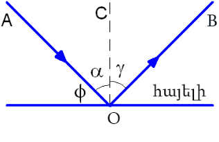

30. Լույսի անդրադարձման օրենքը
Լույսի անդրադարձման օրենքը
Լույսը ընկնելով մարդու աչքի մեջ առաջացնում է տեսողական զգացողություն, որի հետևանքով մենք տեսնում ենք լույսի աղբյուրը և բոլոր այն մարմիններն ու մակերևույթները, որոնք անդրադարձնում են իրենց վրա ընկնող լուսային ճառագայթները: Լավ անդրադարձնող մակերևույթ է հայելին:

Այն կարող է անդրադարձնել լուսային էներգիայի մոտ 90%-ը:
Լույսի անդրադարձումը ենթարկվում է որոշակի օրենքի, որը հայտնագործել է Հին Հունաստանի գիտնական Էվկլիդեսը:
Այս օրենքը սահմանելու համար հարմար է օգտվել օպտիկական սկավառակ կոչվող սարքից:
Օպտիկական սկավառակում լույսի աղբյուր է ծառայում փոքրիկ լամպը, որը գտնվում է շարժական լուսարարի ներսում:
Լուսարարից դուրս եկող լույսի նեղ փունջը՝ AO լույսի ճառագայթը, տարածվում է սկավառակի մակերևույթին և նրա մասնիկների կողմից ցրվելով դառնում է տեսանելի:

Սկավառակի կենտրոնում տեղադրված հարթ հայելուց AO ճառագայթը անդրադառնում է և սկավառակի վրա առաջացնում OBանդրադարձած ճառագայթ:
Ստացված պատկերը վկայում է այն մասին, որ AO ճառագայթը, հայելու հարթությանը տարված OC ուղղահայացը և OB անդրադարձած ճառագայթը գտնվում են միևնույն՝անկման հարթության մեջ:
Ընկնող ճառագայթի և անդրադարձնող մակերևույթին տարված ուղղահայացի միջև կազմած անկյունը կոչվում է անկման անկյուն՝ α (ալֆա):
Անդրադարձած ճառագայթի և անդրադարձնող մակերևույթին տարված ուղղահայացի միջև կազմած անկյունը կոչվում է անդրադարձման անկյուն՝ ՝γ (գամմա):

Անդրադարձած ճառագայթն ընկած է անկման հարթության վրա, ընդ որում անկման անկյունը հավասար է անդրադարձման անկյանը՝ α=γ :
Փորձնական տվյալների վրա հիմնված այս օրենքը կոչվում է անդրադարձման օրենք:
Նկատենք նաև, որ եթե փորձում լույսի ճառագայթը ընկնի անդրադարձնող մակերևույթի վրա BO ուղղությամբ, ապա անդրադառնալուց հետո այն կանցնի OA ուղղությամբ: Այս հատկությունը կոչվում է լուսային ճառագայթների շրջելիություն:
Հարթ հայելի:
Առօրյա կյանքում մեծ կիրառություն ունեն հարթ, անդրադարձնող մակերևույթները, որոնց անվանում ենք հարթ հայելի:
Երբ առարկան գտնվում է հայելու առաջ, ապա թվում է, թե հայելու հետևում նույնպիսի առարկա է գտնվում: Այն ինչ մենք տեսնում ենք հայելում, կոչվում է առարկայի պատկեր:
Հասկանալու համար, թե ինչպես է առաջանում առարկայի պատկերը հարթ հայելիում, հետևենք հայելու դիմաց տեղադրված S լույսի կետային աղբյուրից դուրս եկող SO1 և SO2 ճառագայթներին: Այդ ճառագայթները հասնելով հարթ հայելուն՝ նրանից կանդրադառնան համաձայն անդրադարձման օրենքի, այսինքն նույն անկյան տակ, ինչ անկյան տակ որ ընկնում է հարթ հայելու վրա:
Անդրադարձումից հետո ճառագայթները տարամիտող փնջով ընկնում են դիտողի աչքի մեջ: Դիտորդը լույսի աղբյուրը կտեսնի այն կետում, որ կետում կհատվեն այդ տարամիտող ճառագայթների մտովի շարունակությունները (կետագծերով նշված), այսինքն S1 կետում:
Այդ կետն էլ՝ S1-ը, հենց S կետային աղբյուրի պատկերն է հարթ հայելում:
S1 պատկերը կոչվում է կեղծ, քանի որ ստացվում է ոչ թե լույսի իրական ճառագայթների այլ դրանց երևակայական շարունակությունների հատումից:
Այսպիսով, հարթ հայելում պատկերը միշտ կեղծ է լինում:
Օգտվելով եռանկյունների հավասարության հայտանիշներից կարելի է ապացուցել, որ S1O=SO
Սա նշանակում է. հարթ հայելում պատկերն նրանից գտնվում է նույն հեռավորության վրա, ինչ հեռավորության վրա նրա դիմաց գտնվում է լույսի աղբյուր
Կատարելով փորձ հարթ թափանցիք ապակու, վառվող և հանգած մոմերով: Փորձով կարելի է համոզվել, որ վառվող մոմի պատկերը այդ՝ մասամբ անդրադարձնող ապակու մյուս կողմում կեղծ է, քանի որ, եթե պատկերի երևացող բոցի վրա թղթի կտոր պահենք այն չի այրվի:
Կատարելով համապատասխան չափումներ քանոնով կարելի է համոզվել, որ վառվող մոմը և նրա կեղծ պատկերը ապակուց գտնվում են նույն հեռավորության վրա
Փորձը ցույց է տալիս նաև, որ մոմի պատկերի բարձրությունը հավասար է իրական մոմի բարձրությանը;
Արդյունքները ամփոփելով կարելի ասել, որ հարթ հայելում առարկաների պատկերները միշտ լինում են.
Ուշադրություն
1. կեղծ
2. ուղիղ (չշրջված)
3. չափերով հավասար առարկայի
4. հայելուց նույն հեռավորության վրա, ինչ հեռավորության վրա նրա դիմաց տեղադրված է առարկան:
Այլ կերպ ասած՝ հարթ հայելում առարկայի պատկերը համաչափ է առարկային հայլելու հարթության նկատմամբ
Սակայն հայելում առարկայի պատկերի և առարկայի միջև կան նկատվող տարբերություններ: Հայելային անդրադարձումը միշտ աջը ձախ է փոխում և հակառակը:
Այդ պատճառով հնարավոր չէ հայելում կարդալ տեքստերը:

Հայելին ունի մեծ կիրառություններ կենցաղում, տարբեր օպտիկական սարքերում: Այդպիսի հայտնի սարքերից է պերիսկոպը, որը կիրառվում է տանկերից, սուզանավերից, խրամատներից, տարբեր թաքստոցներից նայելու համար: